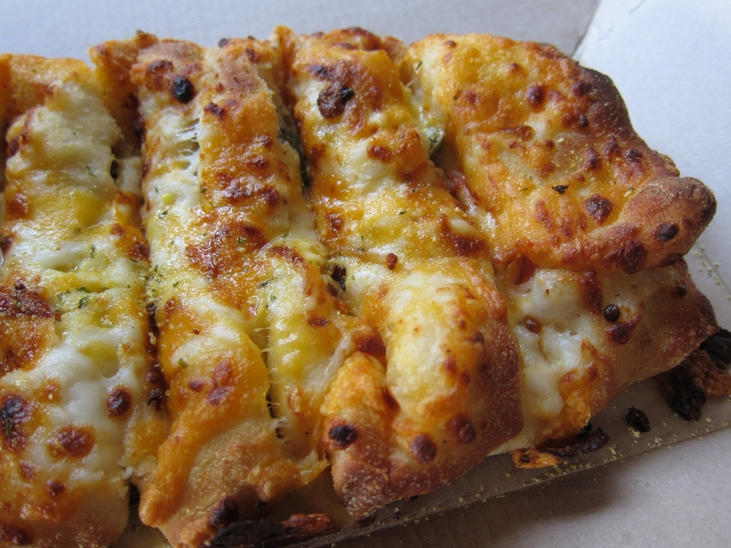

Born on May 28, 1994, I embarked on my educational journey and am currently pursuing my graduation, which began in May 2023. I dedicated 5 years of my career to Amazon, working there from 2017 until November 2022. In 2020, I took a significant step in my personal life by getting married, and in 2022, my world expanded with the arrival of my baby girl, Dhivisha. Our family was not complete without our loyal golden retriever, Leo, who brought even more warmth and joy to our lives. These experiences have shaped my path, blending education, career, family, and the love of our furry friend, Leo.
My favorite food is Domino's Jalapeno Stuffed Cheesy Bread. I love it because of its spicy jalapeno flavor combined with the gooey cheesy goodness inside soft bread. It's the perfect appetizer or side dish for any pizza, and I can never resist its mouthwatering taste.
